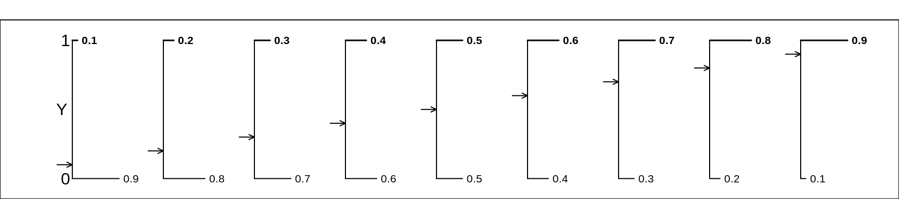

Chapter 15 Computing Session 1
15.1 Objectives
The ‘computing’ objectives are to learn how to use R to put series of observations into vectors, and how to plot one series against another.
The ‘statistical’ objective of this exercise is to understand the concept of a distribution of a numerical characteristic (here an amount of elapsed time), and the various numbers describing its ‘central’ location and spread, and other ‘landmarks’. You will also be introduced (in the next section) to 2 functions that give a more complete description of a distribution.
15.2 Background to two datasets
15.2.1 Climate
Later on, when we get to regression models, we will examine climate trends using unusual datasets, which suggest that over the last few centuries, winter tends to end earlier, and plants tend to flower earlier.
One such dataset arose as part of a long-running contest, the Nenana Ice Classic More here.
Here is the 2020 brochure. When this exercise was constructed, in March 2020, is was time to compete this year, but it looked like you needed to be in Alaska to find and fill out a ticket, and the organizers asked for your mailing address, not your email one!
15.2.2 Ages of Cars
One measure of the state of, and confidence in, a country’s economy is the monthly, or quarterly or yearly, numbers of new car registrations, such as these data from government e.g., and commercial sources, e.g., for Canada, the USA, and the UK.
Another, which we will explore here, is the age distribution of all registered cars. (Because it is the only one we could find with detailed age data) we will examine a dataset (‘VEH0126’) that contains the numbers, as of the end of 2019, of Licensed vehicles by make and model and year of manufacture, produced by the UK Department for Transport
15.3 Statistical/Computing Tasks
15.3.1 Guesses re Date of Ice Breakup
You are asked to approximate and carefully examine the distribution of guesses in 2018, contained in the Book of Guesses for that year. The full book is available as the 7th tab in the 2020 website. If the full book takes too long to load, here are some excerpts from the book.
For now, we will measure the guesses (and eventually the actual time) as the numbers of days since the beginning of 2018. Thus a guess of Tuesday April 17 5:20 p.m. would be measured as 31 + 28 + 31 + 16 + (17 + 20/60)/24 = 106.7208 days since the beginning of 2018.
It would be tedious to try to apply optical character recognition (OCR) to each of the 1210 pages in order to be able to computerize all of the almost 242,000 guesses. Instead, you are asked to reconstruct the distribution of the guesses in two more economical ways:
By determining, for each of the 36 x 2 = 72 half-days days from April 10 to May 15 inclusive, the proportion, p, of guesses that are earlier than mid-day and midnight on that date. [ In
R, if p = 39.6% of the guesses were below xy.z days, we would write this as pGuessDistribution(xy.z) = 0.396. Thus, if we were dealing with the location of a value in a Gaussian (‘normal’) distribution, we would writepnorm(q=110, mean = , sd = )] Once you have determined these 72 proportions (p’s), plot them on the vertical axis against the numbers of elapsed days since the beginning of the year on the horizontal axis. Thus the horizontal axis runs from 92 + 10 = 102 days to 92 + 30 + 15 = 137 days.By determining the 1st, 2nd, … , 98th, 99th percentiles. These are specific examples of ‘quantiles’, or q’s. The q-th quantile is the value (here the elapsed number of days since the beginning of 2018) such that a proportion q of all guesses are below this value, and 1-q are above it. [ In
R, if 40% of the guesses were below 110.2 days, we would write this as qGuessDistribution(p=0.4) = 110.2 days. Thus, if we were dealing with the 40th percentile of a Gaussian distribution with mean 130 and standard deviation 15, we would writeqnorm(p=0.4, mean = 130, sd = 15). ] Once you have determined them, plot the 99 p’s (on the vertical axis) against the 99 (elapsed) times on the horizontal axis. [see the spreadsheet].
15.3.2 How old are UK cars?
Below, you are asked to summarize the age distribution of all of the cars registered in 2019. Since the datafile (which you can open in OpenOffice or in Excel) has separate sheets for different types of vehicles (cars, motorcycles, buses, etc.) you will need to save the ‘cars’ sheet as a ‘.csv’ (comma separated values) file. Besides some header material (which you can skip using the skip argument in the read.csv' command inR`) it has as may rows as there are models (approx 40,000), and a ‘count’ column for every year of manufacture, back to 1900 or so, as well as a total across all of these years.k
But first, before we get to the actual exercises, an orientation …
15.4 The p and q functions: an orientation
The ‘p’ function tells us, for a given value of the characteristic, what proportion of the distribution lies to the left of this specified value.
The ‘q’ (or quantile) function tells us, for a given proportion p, what is the value of the characteristic such that that specified proportion p of the distribution lies to the left of this ‘q’ value.
In the plot below, the values of the p function are shown on the vertical axis, in red, against the (in this case, equally-spaced) values of the characteristic, shown on the horizontal axis. You enter on the horizontal axis, and exit with an answer on the vertical axis.
The q function (in blue) goes into the opposite direction. You enter at some proportion on the vertical axis, and exit with a value of the characteristic (a quantile) on the horizontal axis. In our plot, the proportions on the vertical axis are equally-spaced. Percentiles and quartiles are a very specific sets of quantiles: they are obtained by finding the values that divide the distribution into 100 or into 4.

15.5 Shapes of Distributions
There are a lot of misconceptions here. Part of the confusion stems from not distinguishing distributions of individual values (the theme in this chapter) from the (conceptual) distributions of statistics (summaries such as means, proportions, regression slopes) computed from samples of individual values.
Distributions of the second type are called sampling distributions, and their shapes cannot be observed … unless we simulate them, or work them out using the mathematical statistics. Otherwise, they are unseen, virtual, conceptual. The sample size (the \(n\)) plays a central (pun intended) role in the shape, even more so than the shape of the distribution being sampled from. Sampling distributions are the topic of the next computing chapter.
For now, in this chapter, we are only concentrate on distributions of individual values. The variation of these individual values can be due just to measurement error, or to genuine biological variation, or – in the case of the pedictions about the date of the ice break-up – differences in individual perrceptions and knowledge.
The main points concerning the shape of a distribution of individual values are that:
The size of the population has nothing to do with the shape. If we could measure the distribution of the diameters of one’s red blood cells, the size distribution should look the same whether you are smaller person or a larger person, or male or female. Moreover, the distribution of individuals’ red bllod cell concentrations would be the same in provinces/states/countries with larger/smaller populations of persons.
There is no default shape. The shape is determined by the context
This is especially the case if the values are determined/generated by humans and human behaviour/choice and by circumstances. A good example is the distribution of finishing times of marathon runs. In one setting you might find peculiarities such as seen in this dataset. In another, it might have very different shapes in those who are and are not elite runners and whether there is a ‘qualifying’ time requirement – see ‘Elite and the rest of us’ in the link.
Another example are the distributions of hospital size (no. of beds) in different countries or states. [Likewise with the sizes of schools and universities] These might be determined by government policy. In former communist countries, there are often cookie-cutter hospitals, all the same size within a region, and given the names hospital # 1, hospital # 2, etc. In other countries, they might reflect variations in population density, or historical reasons.
The year-of-manufacture distribution of cars registered in the the UK has some ‘person-made’ (and mainly ‘man’-made) non-smoothness. Debate continues as to whether the further ‘irregularities’ that will be evident by the end of 2020 were man-made or nature-made.
Yet another examples are age-distributions: many factors determine the age-structure of a country or region of a country. It used to be like a pyramid, and still is in less developed countries. See here for some historical and modern Canadian and world examples.
The distribution of age-at-death is determined by the age-distribution of the living – and by the many factors that drive age-specific death rates.
The (sex-specific) distribution of adult heights of a homogeneous population might be close to symmetric (and even close to Gaussian), since the heights are determined by a large number of both ‘nature’ and ‘nurture’ factors. But, the (sex-specific) distribution of adult weights would not. Weight is determined in part by height, but also by a large number of ‘elective’ factors that are determined by one’s own lifestyle, and by the environment one lives in. In over-nourished North America, the distribution has a long right tail, whereas in some under-nourished parts of the world, it would have a long left tail.
Why does the distribution of blood levels of lead in women of child bearing age have a long right tail, and why is it better fiot by a log-‘normal’ than a ‘normal’ curve? Note that the shape would not change much if a bigger sample had been taken. The histogram would just be smoother. Might it have to do with subpopulations of persons with different other sources of exposure besides Glasgow’s drinking water? For older distributions of blood lead, see here. For modern ones, use Google.
The distribution of the lengths of flight delays might well be determined by competition, regulation, location, etc.
‘Then God said, ’Let there be a firmament in the midst of the waters, and let it divide the waters from the waters.’ Thus God made the firmament, and divided the waters which were under the firmament from the waters which were above the firmament; and it was so. And God called the firmament Heaven. So the evening and the morning were the second day’ (Genesis 1:6-8). Did ‘God’ try to make it so that the distribution of the depths of the ocean would have a Gaussian curve?
The distribution is a property of the population or the owner.
The testing for normality that is so common needs to stop. There are a few individual-based contexts (such as with growth curves, where the percentile where an individual is located on a growth curve critical, or in tests to detect doping in sports, where an athlete’s test value is located in a reference distribution) where the shape is critical. However, when we are interested in estimating the mean or another measure of (covariate-patten-specific) distributions, the shape of the distribution of individaul values is not that relevant.
See here for shapes – some odd – of distributions of individual values – and material on graphics.
15.6 Exercises
15.6.1 Guesses in Nenana Ice Classic
Refer again to the guesses about the time of the ice-breakup.
Once you have determined the 72 (cumulative) proportions (p’s) associated with the 72 half-days, plot them on the vertical axis against the numbers of elapsed days since the beginning of the year on the horizontal axis. Thus the horizontal axis runs from 92 + 10 = 102 days to 92 + 30 + 15 = 137 days.
The 1st, 2nd, … , 98th, 99th percentiles are not so easy to determine since you have to locate the 2419th, 4839th, 7258t, … entries in the 1201-page Book of Guesses and plot the 99 p’s (on the vertical axis) against the 99 (elapsed) times (q’s) on the horizontal axis. Instead, use the first entry on each of pages 11, 21, … in this excerpt. [see the shared spreadsheet]. Using a different colour, plot these slightly-more-dense quantiles on the horizontal axix against the following percentages:
entries = 200*seq(10,1200,10) + 1
percent = 100 * entries/241929
noquote( paste(head(round(percent,1),10),collapse="%, ") )## [1] 0.8%, 1.7%, 2.5%, 3.3%, 4.1%, 5%, 5.8%, 6.6%, 7.4%, 8.3tail(round(percent,1),10)## [1] 91.8 92.6 93.4 94.2 95.1 95.9 96.7 97.5 98.4 99.2Compare the Q\(_{25}\), Q\(_{50}\), and Q\(_{75}\) obtained directly with the ones obtained by interpolation of the curve showing the results of the other method.
Compare the directly-obtained proportions of guesses that are before (the end of) April 20, April 30, and May 10 with the ones obtained by interpolation of the curve showing the results of the other method.
By successive subtractions, calculate the numbers of guesses in each 1/2 day bin, and make a histogram of them. From them, calculate the mean, the mode, and the standard deviation.
How far off was the median guess in 2018 from the actual time? Answer in days, and (with reservations stated) as a percentage? {see the 2020 brochure}
Why did the ‘experts’ at the 1906 English country fair do so much better that their Alaskan counterparts?
Why was the shape of the distribution of guesses by Dutch casino goers so different from the English and Alaskan ones?
Instead of measuring the guessed times from the beginning of the year, suppose that, as Fonseca et al did, we measure the guessed times from the spring equinox in Alaska, i.e. from 8:15 a.m. on Tuesday, March 20, 2018, Alaska time. In this scale, compute the mean guess, and the SD of the guesses.
Suppose, again, we measure the guessed times from the spring equinox, but in weeks. In this scale, compute the mean guess, and the SD of the guesses.
How much warmer/colder in Nov-April is Montreal than Nenana?
(For a future assignment, but you can start thinking about how) From a random sample of 100 guesses from the book, estimate how many guesses in the entire book are PM.
my.id = 800606
set.seed(my.id)
n = 50
sample.entry.numbers = sample(x = 1:241929, size=n)
sorted.sample.entry.numbers = sort(sample.entry.numbers)
head(sorted.sample.entry.numbers,10)## [1] 10542 17437 18351 21113 24086 28782 30055 32220 33162 36443page.number = ceiling(sorted.sample.entry.numbers/200)
within.page = sorted.sample.entry.numbers-200*(page.number-1)
column.number = ceiling(within.page/100)
row.number = within.page - 100*(column.number-1)
dataset = data.frame(page.number,column.number,row.number)
head(dataset)## page.number column.number row.number
## 1 53 2 42
## 2 88 1 37
## 3 92 2 51
## 4 106 2 13
## 5 121 1 86
## 6 144 2 82tail(dataset)## page.number column.number row.number
## 45 1087 1 80
## 46 1097 2 3
## 47 1121 1 16
## 48 1131 1 55
## 49 1175 2 52
## 50 1181 2 30Some more links on the ‘Wisdom of Crowds’
https://www.all-about-psychology.com/the-wisdom-of-crowds.html
http://galton.org/essays/1900-1911/galton-1907-vox-populi.pdf
15.6.2 Exercise: Ages of UK Cars
Once you have read in the data from the .csv file
Sum the row-specific (model-specific) totals, so as to arrive at the total of all registrations. Then look up the population of the UK, and calculate the number of registered cars per capita. Compare this with the corresponding figures for Canada and for the USA. Hint: If you have a vector
v, or a row or a column in adata.frame, then this statementsum(v,na.rm=TRUE)will return the overall sum of all of the values inv. Thena.rm = TRUEoption excludes (removes)NAvalues: otherwise, anyNAvalues make the sumNAas well.Sum the counts in each column, so as to obtain a vector of year-of-manufacture-specific frequencies. Plot these against the years of manufacture, and comment on the shape of the frequency distribution. Hint: If you have a data.frame (or matrix) called
df, then this statementapply(df[,4:13], MARGIN=2, FUN=sum, na.rm=TRUE)will return, as a vector of length 10, the sums of the entries in columns 4 to 13 respectively. [If you specify MARGIN=1, it applies thesunsum` function to each row, and returns row totals]Apply the
cumsumfunction inRto these frequencies, and plot the cumulative numbers against the year of manufacture. Comment on any any ‘remarkable’ (^) features. What do you think the graph will look like at thee nd of 2020?
(^) In handrwitten medical charting, remarks are often numbered R\(_1\), R\(_2\), etc. see here. JH’s mother was always annoyed when the community nurse would say something was ‘unremarkable’, but it made sense: in their training, nurses are taught to document (remark on) any deviation from the normal. Just like so many adjectives today, tremarkable has lost some of its specificity.
From this graph, visually estimate the \(Q_{25}\), \(Q_{50}\) and \(Q_{75}\) values. Hint: you might use the
ablinefunction to add 3 horizontal lines to help you. Also, to see whatcumsumreturns, trycumsum( c(1,2,3,4,5) )or (for short)cumsum( 1:5 ).Use
Rto do formally what you did visually: find the first (earliest) year of manufacture such that the cumulative total exceeeds 25% (50%, 75%) of the total. Thewhichfunction in R can help: for example, to find the earliest partial/cumulative sum of the vectorv =c(1, 2, 3, 4, 5, 6, 7, 8, 9, 10)to exceed 55/2, you can usemin(which( cumsum(v) > 55/2 ))to find that it is the 7-th one. To see howitwhichworks, usewhich( cumsum(v) > 55/2 )` first to see what it returns.It would make the statistics more useful (less particularistic) if you converted the scale from
year of manufacturetoage. How would this change of scale affect (a) the shape of the distribution (b) the \(Q\)’s?
15.7 SUMMARY
15.7.1 Computing
Assigning values to objects via
<-or=Putting numbers into vectors via concatenation
c( , , )Putting a sequence of values into vectors via the
seq()functionLooking at the first
nand the lastnelements of an object viahead(object,n)andtail(object)– if you omit then, it defaults to 6Making a new numerical value or vector of numerical values from existing ones via, e.g. via
+,*( multiplication),^ poweretc.Using
str(object)to see the **str*ucture of an objectUsing
plot(x,y)to plot an ‘x’ vector versus a ‘y’ vector.lines(),points()andtext()` can be added to an existing plot.The
approx()function for fitting
15.7.2 Statistical Concepts and Principles
- Definition of the p (Cumulative Distribution) function of a random variable \(Y:\)
\[CDF_Y(y) = F_Y(y) = Prob( Y \le y).\]
- Definition of the q (quantile, or InverseCDF) function of a random variable \(Y:\)
\[ q_Y(p) : the \ y \ such \ that \ Prob( Y \le q) = p.\]
- The is no default shape for the distributions of random variables, especially those representing individual values generated by, or concerning, humans. The shape is determined by the context.